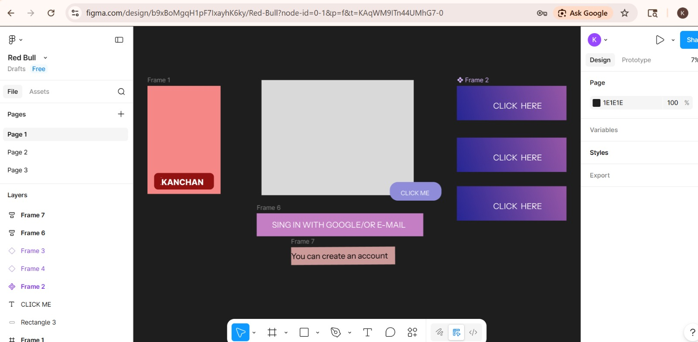
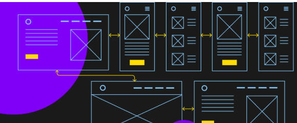
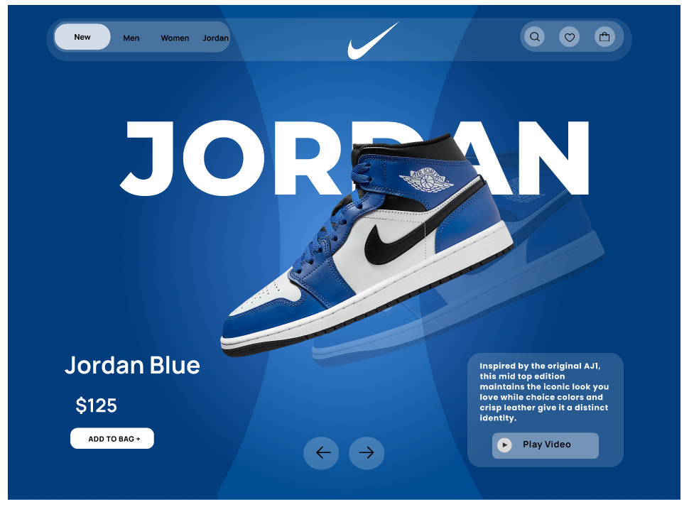

Day 1

- Intro to UI/UX principles & design thinking.
- Difference between UI and UX with real examples.
- Explored Figma interface, tools, and frames.
- User research & problem identification basics.
- Created first wireframe with shapes & text.
Day 2

- Wireframing for website & mobile layouts.
- Alignment, spacing, hierarchy & balance.
- Grids & layout structures for organization.
- Created low-fidelity app prototype.
- User flow & navigation planning.
Day 3

- High-fidelity UI screens with typography & color.
- Design consistency via components & styles.
- Auto-layout feature for responsive design.
- Icons, images & reusable design elements.
- Enhanced visual aesthetics & usability.
Day 4

- Prototyping & interaction design in Figma.
- Transitions, animations & navigation links.
- Clickable prototype for UX testing.
- Usability testing & feedback handling.
- Presented working prototype simulation.
Day 5

- Finalized UI project workflow.
- Applied design system & components.
- Optimized layouts for better user experience.
- Exported assets & shared professionally.
- Prepared final project for portfolio.